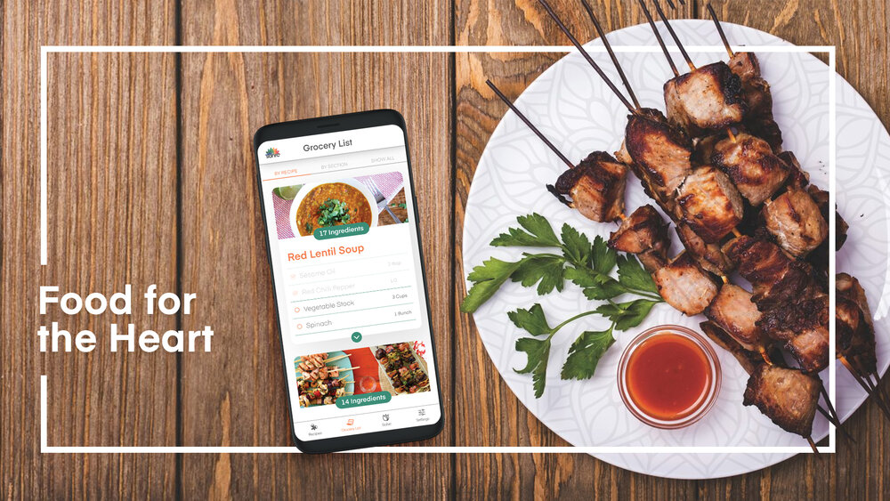
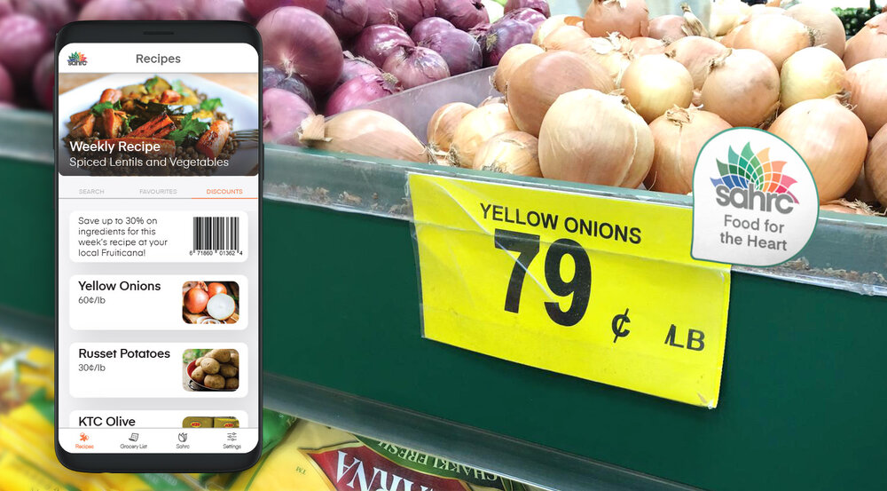

SAHRC is a grass roots group of researchers, clinicians, service providers, and patients who are committed to health research representation in Fraser Health.
My team first began with ethnographic research of stakeholders. I synthesized notes from interviews and wrote copy content that highlights their focuses, potential threats, and a general direction for research moving forward. The threats we identified helped us to establish an initial design focus, that is to identify proper channels for SAHRC to engage with South Asian youths in making health and overall well-being a priority.
Based on our ethnographic research, we conducted a user journey map of SAHRC’s recruitment process. I identified some critical touchpoints between SAHRC and its community (such as email and in-person meetings at events), alongside pain-points and potential intervention opportunities during the recruitment process. With this, we began to understand why their current methods of outreach aren’t always successful through visual indicators in specific areas.
After conducting interviews with active members within various South Asian communities, I took the information and generated a detailed list (from schedule overview to motivations, needs, and pain points/influences) of key character traits to understand how specific age demographics might respond to health research and initiatives from SAHRC. It was after our participatory workshops where we decided to focus on post-secondary students, since we found these interviewees to be more receptive to changes, especially when it comes to topics pertaining to health and well being.
With our persona framed, we then began to conceptualize methods to help SAHRC better communicate with and gain research data from South Asian post-secondary students. These concepts included creating a digital presence for SAHRC, promotional products to familiarize the SAHRC brand, and volunteer onboarding methods. When we proposed our ideas to SAHRC's research coordinator, Aven Sidhu, we learned that data collection is important to SAHRC, but is not their immediate goal. Rather, they are focused on addressing prominent health issues within the South Asian community. We took this meeting opportunity to involve Aven as part of our participatory workshop to figure out how to pivot our design focus.
Taking into account workshop activities, we identified some key insights that helped us to change our design direction:
Through multiple weeks of research, we collected numerous amounts of notes and data. We discovered that there is a struggle to engage with a younger demographic because of untargeted outreach methods. Additionally, heart disease is one of the top health concerns within the South Asian community, mainly due to cultural diets. In the final weeks of the course, we came up with a new design focus: to overcome SAHRC's hurdle of outreach towards South Asian post-secondary students in the Metro Vancouver area by educating them about its effect of heart disease, but also the preventative measures that can be taken to reduce development chances. Although our intervention concept did change, we still retained the core element of our design focus, that is, outreach to make health and well-being a priority, where the value proposition such as cultural relevance, preventive measures, and as an establishment for future projects to address specific community health concerns.
For the next three weeks, my team used our research insights to create concepts for a potential solution. As the solution is intended to be a part of the cooking and grocery shopping routines (continual use), we focused on the mobile platform. We decided to call this concept Food for the Heart, that targets heart disease related issues that stems from South Asian cuisine. It partners SAHRC with local grocery stores, like Fruiticana, to educate and help provide healthier alternatives for typical South Asian cuisine, while providing customers with cultural relevance.
I worked on the high fidelity mockups for the interface design.
Our first touchpoint takes place at South Asian grocery stores like Fruiticana. At these stores would be a SAHRC booth with free samples of dishes listed on Food for the Heart. A SAHRC member running the booth can introduce our target demographic to both SAHRC and Food for the Heart, as well as the latter's weekly discounts feature. This information is reiterated on info cards that are available at the booth, which students can take home and read later on.
Each ingredient shown on Food for the Heart's discounts tab is used to cook weekly recipes, creating an intrinsic motivation for post-secondary students to keep making healthier choices in their diet while helping students better keep within a budget. In-store tags would place labels of the weekly discounted ingredients to help post-secondary students better identify them when visiting their local South Asian grocery stores.
From this semester long project, having the chance to apply numerous forms of design methods has taught me just how crucial they are in any design process. Understanding clients and stakeholders is important in determining the focus, but understanding the needs and motivations of the people helps push design, products, and services into the right direction.
As this project was my first time practicing these design methods, I've made mistakes in the design process that I have to be mindful of in the future. For instance, my team's first user journey covered an extremely large timeline, causing us to miss out on uncovering meaningful insights. Moving forwards, I am excited to put into practice these interaction design methods into my future projects beyond product and UI/UX design. Working on this project really helped me the importance of understanding stakeholders and communicating their values.